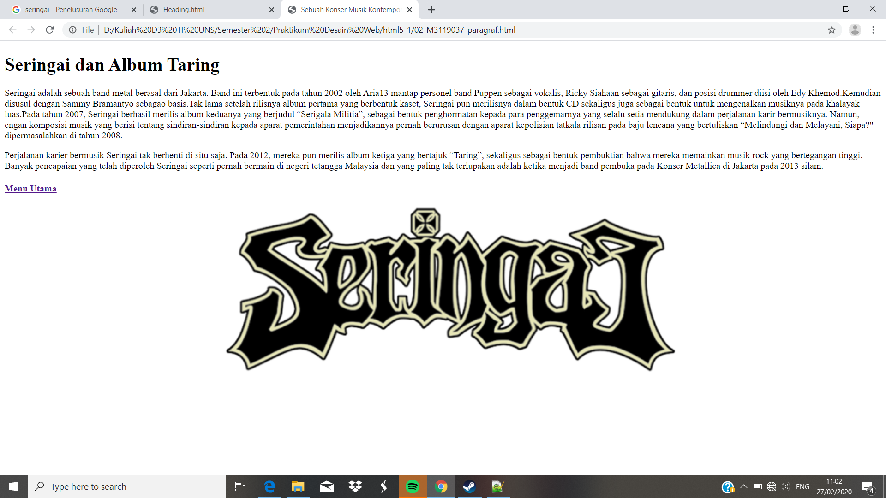

Membuat Paragraf
// Pada percobaan kali ini kita akan membuat dua buah paragraf. Dalam membuat sebuah pargraf kita perlu menggunakan perintah <p> dan ditutup dengan </p>
Codingan
<!DOCTYPE html>
<html>
<head>
<meta charset="UTF-8">
<title>Sebuah Konser Musik Kontemporer </title>
</head>
<h1>Seringai dan Album Taring</h1>
<p>
Seringai adalah sebuah band metal berasal dari Jakarta. Band ini
terbentuk pada tahun 2002 oleh Aria13 mantap personel band Puppen
sebagai vokalis, Ricky Siahaan sebagai gitaris, dan posisi drummer
diisi oleh Edy Khemod.Kemudian disusul dengan Sammy Bramantyo sebagao
basis.Tak lama setelah rilisnya album pertama yang berbentuk kaset,
Seringai pun merilisnya dalam bentuk CD sekaligus juga sebagai bentuk
untuk mengenalkan musiknya pada khalayak luas.Pada tahun 2007,
Seringai berhasil merilis album keduanya yang berjudul “Serigala Militia”,
sebagai bentuk penghormatan kepada para penggemarnya yang selalu setia
mendukung dalam perjalanan karir bermusiknya. Namun, engan komposisi
musik yang berisi tentang sindiran-sindiran kepada aparat pemerintahan
menjadikannya pernah berurusan dengan aparat kepolisian tatkala rilisan
pada baju lencana yang bertuliskan “Melindungi dan Melayani, Siapa?"
dipermasalahkan di tahun 2008.
</p>
<p>
Perjalanan karier bermusik Seringai tak berhenti di situ saja. Pada 2012,
mereka pun merilis album ketiga yang bertajuk “Taring”, sekaligus sebagai
bentuk pembuktian bahwa mereka memainkan musik rock yang bertegangan tinggi.
Banyak pencapaian yang telah diperoleh Seringai seperti pernah bermain di
negeri tetangga Malaysia dan yang paling tak terlupakan adalah ketika menjadi
band pembuka pada Konser Metallica di Jakarta pada 2013 silam.
<h4> <a href="index.html">Menu Utama </a> </h4>
Tampilan Hasil Percobaan

Kesimpulan
Jadi untuk membuat sebuah paragraf kita dapat menggunakan perintah <p> dan ditutup dengan </p> seperti diatas. Jarak antara kedua paragraf juga bisa kita buat dengan perintah tersebut.